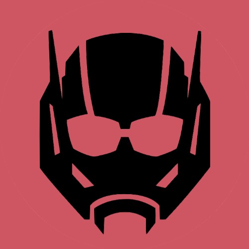
Ant-Man (Scott Lang) (Terre-616)
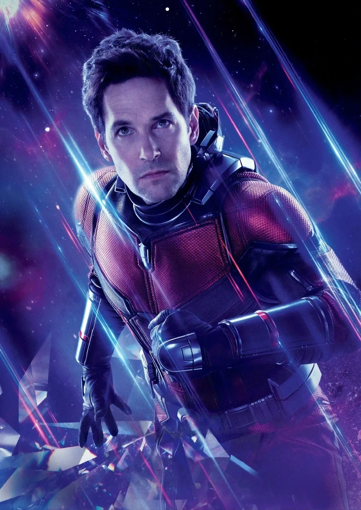
Origines :
Avant de devenir le second Ant-Man, Scott Lang était un électrotechnicien de génie employé par Tony Stark, à Stark International.
Pour sauver sa fille Cassandra, diagnostiquée d'un sérieux problème cardiaque, il cherchera l'aide de la chirurgienne Erica Sondheim, qu'il ne parvint pas à contacter.
Désespéré, Lang décidé de basculer à nouveau dans le crime.
Il s'introduit en pleine nuit dans la maison du Dr. Henry Pym, et vola son costume de Ant-Man.
Mais Pym observait la scène, et sous son identité de Yellowjacket, il suivit Scott, curieux de savoir ce qu'il comptait faire du costume.
Scott Lang revêtit alors le costume d'Ant-Man et découvrit que le Dr.Sondheim était détenue prisonnière par Darren Cross, le président de CTE (Cross Technological Entreprises), qui avait besoin d'elle pour corriger son propre problème cardiaque.
Un combat s'engagea alors entre Cross et Scott, qui en sortit vainqueur.
Après sa libération, Sondheim fut capable de sauver la vie de sa fille.
Scott avait alors l'intention de rendre le costume d'Ant-Man à son propriétaire, puis de se rendre à la police, mais Henry Pym, ayant assisté à toute la scène, lui offrit sa bénédiction et entreprit de le laisser le garder.
Plus tard, Tony Stark recruta Scott pour découvrir la véritable identité de Justin Hammer.
Lorsque Bruce Banner demanda à Iron Man de l'aider à construire une machine puissante qui permettrait de contrôler les battements de son cœur, pour prévenir les transformations en Hulk, Scott et Sondheim lui implantèrent l'appareil avec succès dans la poitrine.
Mais ça n'a pas fonctionné correctement, et Sondheim utilisa des ondes de chocs pour ramener Bruce à son état normal.
Iron Man dirigea alors Sondheim pour retirer l'appareil, mais il fit une crise cardiaque, obligeant Scott à rétrécir pour s'infiltrer dans son armure et ainsi sauver Tony.
Scott aida aussi Yellowjacket à sauver la Guêpe, qui avait été capturée par le Dr. Pernell Solomon, et combattit Taskmaster aux côtés des Avengers.
Il fit plus tard la rencontre des Quatre Fantastiques, et avec eux, il fit son premier voyage dans le « micro-world », où il combattit aux côtés de la Chose.
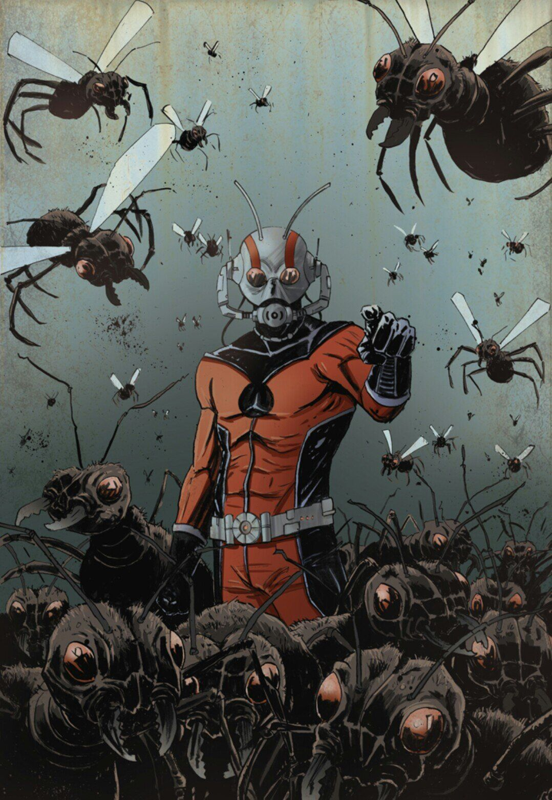
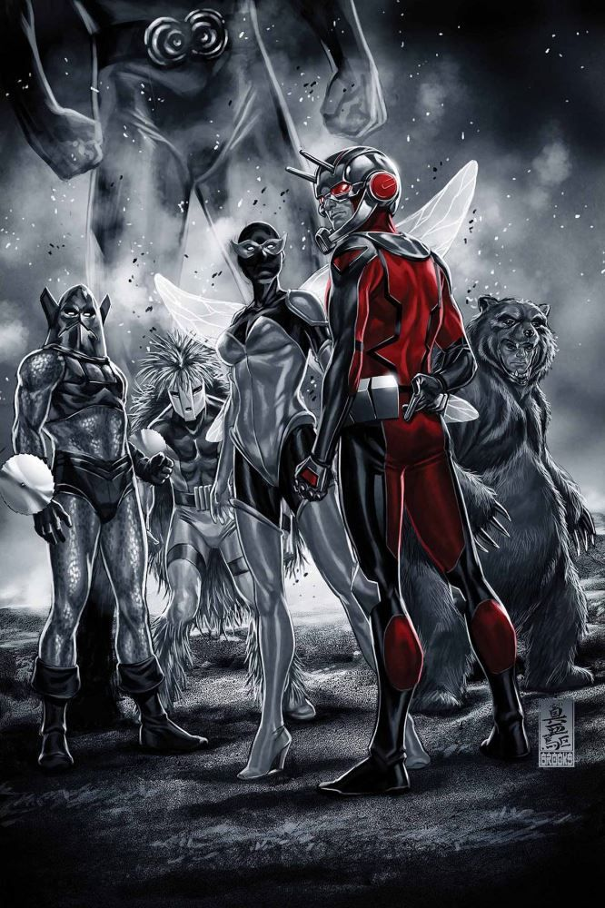
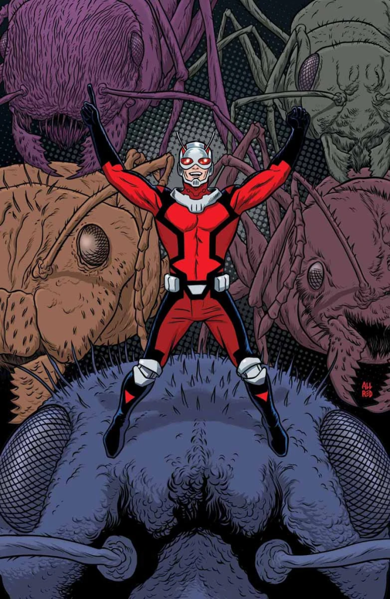
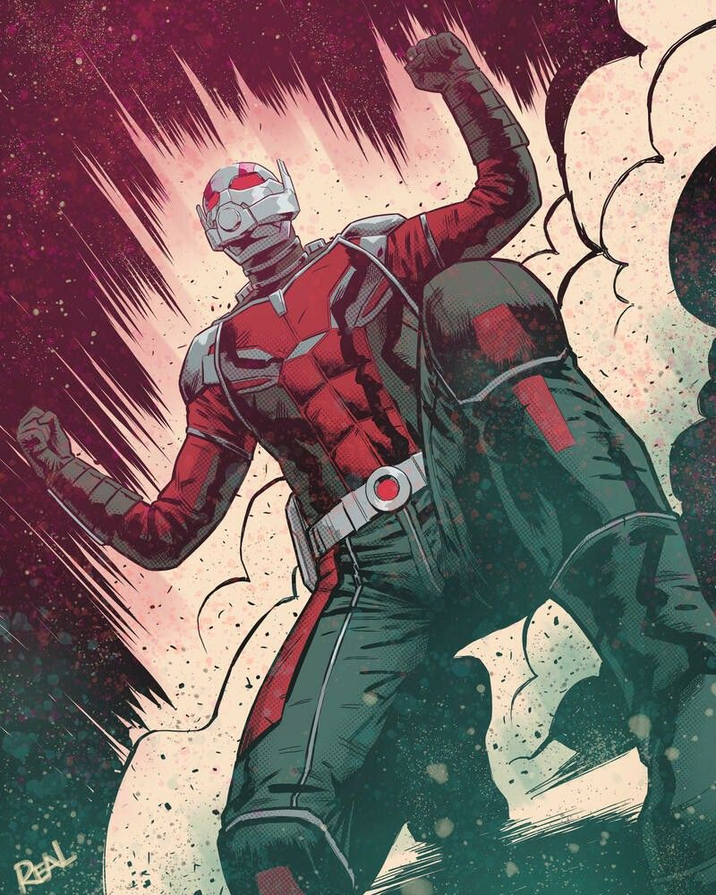
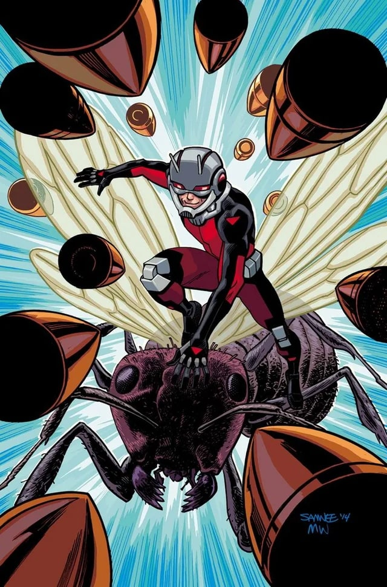
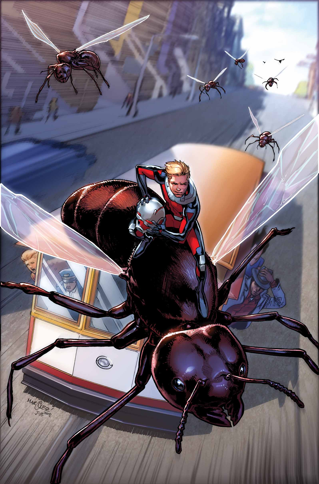
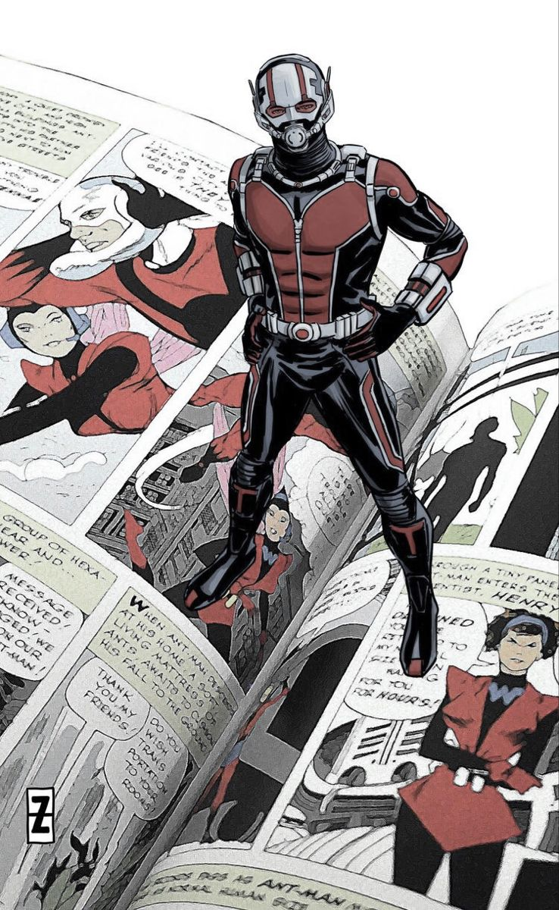
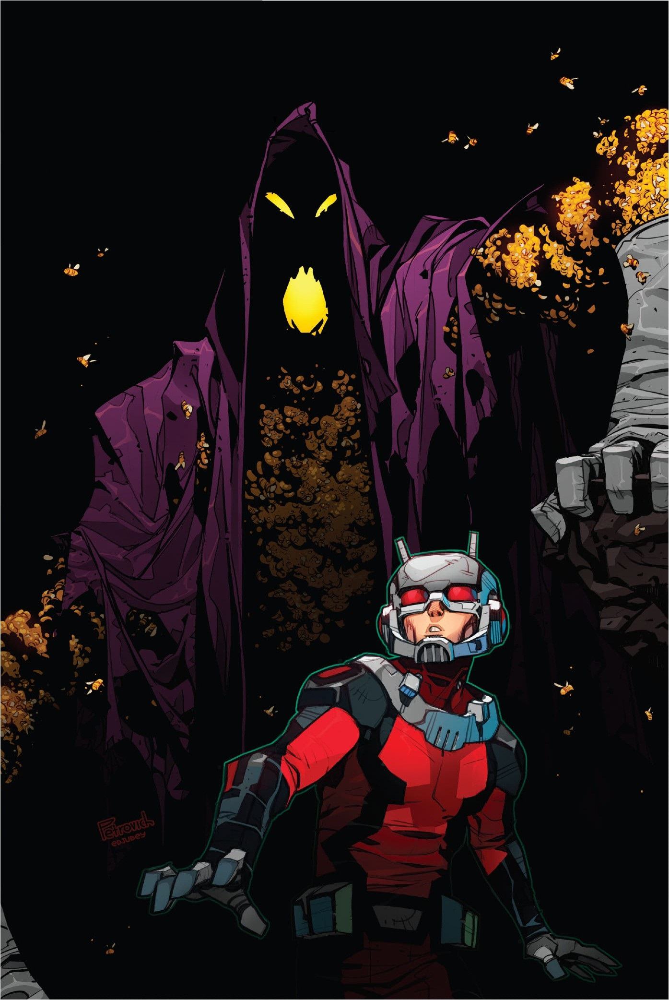
Personnalité :
Scott est un personnage modeste, qui deviendra héros un peu malgré-lui.
Contrairement à d'autres Avengers, Scott est plus « humain », il fait des erreurs, doute, panique parfois, mais il sait garder les pieds sur terre.
Il est très débrouillard, et se fit souvent à son instinct.
Il a un humour constant, souvent teinté d'autodérision, et il sait reconnaître ses faiblesses.
Capacités :
Grâce à la combinaison d'Ant-Man, il possède la capacité de changer de taille grâce aux particules Pym.
Il peut aussi communiquer et contrôler les fourmis grâce au casque qu'il porte sur la tête, dans un rayon d'environ un kilomètre et demi, selon les obstacles autour de lui.
Il est également équipé d'un système d'amplification sonore, qui modifie la fréquence de sa voix pour lui permettre d'être entendu des humains, même à sa taille réduite.
Il conserve sa force humaine normale même sous une taille rétrécie.
Sa force, son endurance, sa durabilité et sa masse sont surhumaine sous forme géante (Giant-Man).

Costume :
Le combinaison d'Ant-Man est rouge et noire, avec un casque ressemblant à un scaphandre (pour sa version moderne), et une ceinture contenant les sérums de particules Pym.
Les principaux ennemis de Scott Lang

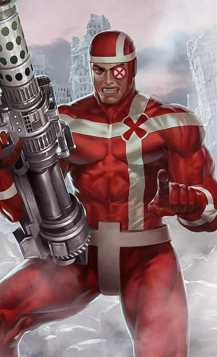


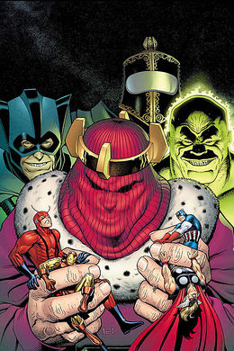

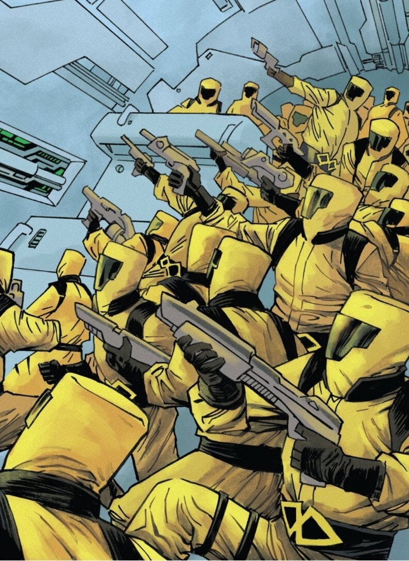

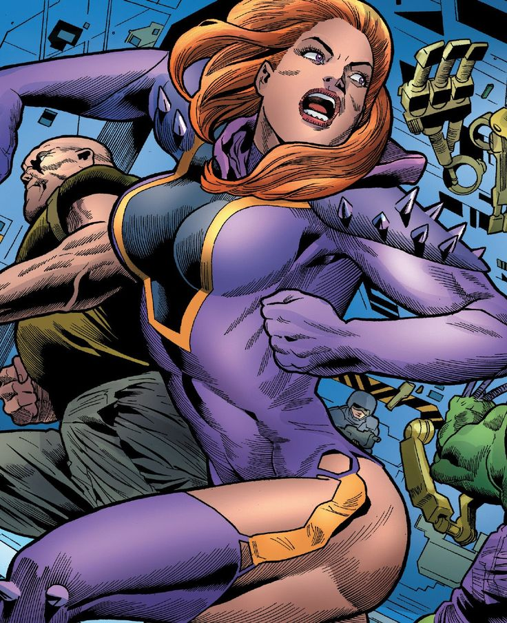

Équipes affiliées